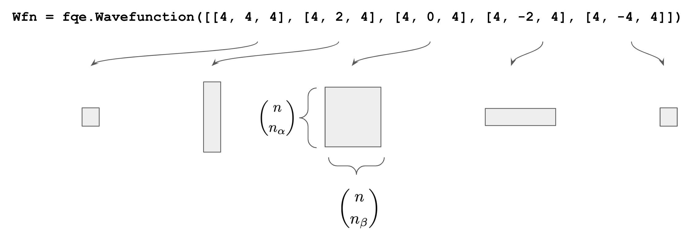

Copyright 2020 The OpenFermion Developers#
#@title Licensed under the Apache License, Version 2.0 (the "License");
# you may not use this file except in compliance with the License.
# You may obtain a copy of the License at
#
# https://www.apache.org/licenses/LICENSE-2.0
#
# Unless required by applicable law or agreed to in writing, software
# distributed under the License is distributed on an "AS IS" BASIS,
# WITHOUT WARRANTIES OR CONDITIONS OF ANY KIND, either express or implied.
# See the License for the specific language governing permissions and
# limitations under the License.
Introduction to FQE#
|
|
|
|
|
OpenFermion-FQE is an emulator for quantum computing specialized for simulations of Fermionic many-body problems, where FQE stands for 'Fermionic quantum emulator.' By focusing on Fermionic physics, OpenFermion-FQE realizes far more efficient emulation of quantum computing than generic quantum emulators such as Cirq, both in computation and memory costs; the speed-up and improved memory footprint originate from the use of the spin and number symmetries as well as highly optimized special algorithms.
The examples of the problems that can be simulated by OpenFermion-FQE include those in molecular electronic structure, condensed matter physics, and nuclear physics.
The initial version of OpenFermion-FQE has been developed in collaboration between QSimulate and Google Quantum AI. The source code is found in the GitHub repository (quantumlib/OpenFermion-FQE).
This tutorial will describe the data structures and conventions of the library.
try:
import fqe
except ImportError:
!pip install fqe --quiet
import fqe
import numpy as np
The FQE Wavefunction#
The Wavefunction is an interface to the objects that hold the actual wavefunction data. As mentioned, the wavefunction is partitioned into sectors with fixed particle and \(Sz\) quantum number. This partitioning information is the necessary information for initializing a Wavefunction object.
As an example, we consider initializing a wavefunction with four spatial orbitals, four electrons, and different \(Sz\) expectation values. The Wavefunction object takes a list of these sectors [[n_electrons, sz, n_orbits]].
wfn = fqe.Wavefunction([[4, 4, 4], [4, 2, 4], [4, 0, 4], [4, -2, 4], [4, -4, 4]])
This command initializes a wavefunction with the following block structure:

Each sector corresponds to a set of bit strings
that encode a fixed particle number and fixed \(Sz\) expectation. The coefficients associated with the bitstrings in these sectors are formed into matrices. This helps with efficient vectorized computations. The row-index of the array corresponds to the \(\alpha\) spin-orbital number occupation index and the column-index corresponds to the \(\beta\)-strings. The Wavefunction object provides tools to access sectors or perform basic mathematical operations on this vector.
Methods to initialize wavefunctions#
FQE wavefunctions can be initialized by calling the constructor directly.
wfn_fqe = fqe.Wavefunction([[2, -2, 4]], broken=None)
When wavefunctions are first created, they are initialized to empty values. We can see this by printing out the wavefunction.
wfn_fqe.print_wfn()
To set the values of a wavefunction, we can use the set_wfn method with a provided strategy.
wfn_fqe.set_wfn(strategy="hartree-fock")
wfn_fqe.print_wfn()
Users can access the wavefunction through the get_sector method. This returns the entire matrix of data representing the specified sector of the wavefunction. For example, we can grab the sector corresponding to \(n = 2\) and \(sz = -2\) by doing the following.
interesting_states = wfn_fqe.get_coeff((2, -2))
print(interesting_states)
Other than the Wavefunction constructor, several utility methods are available to initialize wavefunctions. The function fqe.get_wavefunction builds a wavefunction with definite particle number and spin.
wfn_fqe = fqe.get_wavefunction(4, -2, 10)
The function fqe.get_wavefunction_multiple constructs multiple wavefunctions with different particle number, spin, and orbital number.
wfn_fqe1, wfn_fqe2 = fqe.get_wavefunction_multiple([[4, 0, 10], [5, -5, 10]])
There are also functions like fqe.get_number_conserving_wavefunction and fqe.get_spin_conserving_wavefunction to get number or spin conserving wavefunctions, respectively.
# Get a spin conserving wavefunction.
spin_conserving_wfn = fqe.get_spin_conserving_wavefunction(2, 4)
# Get a number conserving wavefunction.
number_conserving_wfn = fqe.get_number_conserving_wavefunction(2, 4)
Conversions between FQE and Cirq wavefunction representations#
Wavefunctions on \(n\) qubits in Cirq are represented by Numpy arrays with \(2^n\) amplitudes.
nqubits = 4
cirq_wfn = np.random.rand(2**nqubits) + 1.0j * np.random.rand(2**nqubits)
cirq_wfn /= np.linalg.norm(cirq_wfn)
print("Cirq wavefunction:")
print(*cirq_wfn, sep="\n")
To convert from this representation to the FQE representation, the function fqe.from_cirq can be used.
fqe_wfn = fqe.from_cirq(cirq_wfn, thresh=0.0001)
fqe_wfn.print_wfn()
Note: The
threshargument is the value below which amplitudes are considered zero.
We can convert back to the Cirq representation using fqe._to_cirq.
cirq_wfn_from_fqe = fqe.to_cirq(fqe_wfn)
print("Cirq wavefunction from FQE:")
print(*cirq_wfn_from_fqe, sep="\n")
assert np.allclose(cirq_wfn_from_fqe, cirq_wfn)
An important thing to note in these conversions is the ordering of the \(\alpha\) and \(\beta\) strings in the converted wavefunctions. The FQE uses the OpenFermion convention of interleaved \(\alpha\) and \(\beta\) orbitals. Thus when converting to Cirq we first convert each bitstring into an OpenFermion operator and then call normal ordering.
Printing and saving wavefunctions#
Printing is currently available as alpha beta strings followed by the coefficient as well as orbital occupation representation.
print('String formatting')
fqe_wfn.print_wfn(fmt='str')
print('Occupation formatting')
fqe_wfn.print_wfn(fmt='occ')
Wavefunctions can also be saved to disk using the save method which takes a filename and optional path.
Action on Wavefunctions: Fermionic algebra operations and their unitaries on the state#
FermionOperators can be directly passed in to create a new wavefunction based on application of the operators. The FermionOperators are parsed according to the interleaved \(\alpha\) \(\beta\) indexing of the spin-orbitals. This means that odd index FermionOperators correspond to \(\beta\)-spin orbitals and even are \(\alpha\)-spin orbitals.
Sharp Edge:
The user must be careful to not break the symmetry of the wavefunction. If a request to apply an operator to a state takes the wavefunction outside of the specified symmetry sector the FQE will not execute the command. Effectively, the FQE requires the user to have more knowledge of what type of operations their Wavefunction object can support.
from openfermion import FermionOperator, hermitian_conjugated
ops = FermionOperator('2^ 0', 1.2)
new_wfn = fqe_wfn.apply(ops + hermitian_conjugated(ops))
Unitary operations#
Any simulator backend must be able to perform unitary evolution on a state. The FQE accomplishes this by implementing code for evolving a state via the action of a unitary generated by fermionic generators. Given a fermion operator \(g\), the unitary
can be applied to the state. It can be shown that this evolution operator can be rewritten as
The \(\mathbb{I}_{!s}\) is for setting the coefficients of the unitary that are not in the subspace \(\mathcal{H}_{s} \subset \mathcal{H}\) where \(gg^{\dagger}\) is 0.
The user can specify a fermionic monomial in OpenFermion and use the time_evolve method of the Wavefunction object to call the evolution. All the rules for preserving symmetries must be maintained as before.
i, j, theta = 0, 1, np.pi / 3
op = (FermionOperator(((2 * i, 1), (2 * j, 0)), coefficient=-1j * theta) +
FermionOperator(((2 * j, 1), (2 * i, 0)), coefficient=1j * theta))
new_wfn = fqe_wfn.time_evolve(1.0, op)
new_wfn.print_wfn()
In other tutorials we will do a deeper dive into supported time-evolution operations. To serve a full functioning time-evolution platform the FQE also implements arbitrary time-evolution of full Hamiltonian operators consisting of sums of non-commuting terms. The Taylor and Chebyshev expansion methods are used to do the exact time evolution.